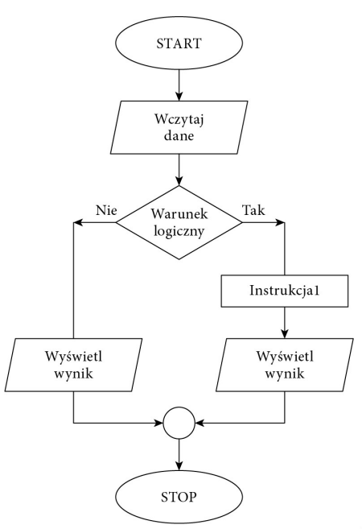
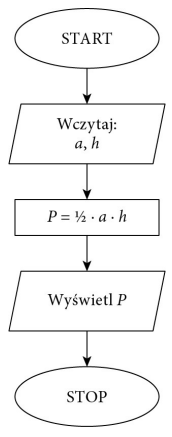

Proste algorytmy
Algorytm to zestaw ściśle określonych czynności prowadzących do wykonania pewnego
zadania. Określa sposób rozwiązania problemu i ma zastosowanie w różnych dziedzinach. Języki programowania to narzędzia, które bardzo dobrze nadają się do zapisu
algorytmów. Aby napisać dobry program komputerowy, należy opracować skuteczny
algorytm i zdefiniować dla niego odpowiednie struktury danych.
Algorytm przetwarzania danych powinien przy takim samym zbiorze danych wejściowych zwracać zawsze taki sam wynik. Ale stanie się tak tylko w dokładnie takich samych warunkach i przy tych samych danych pomocniczych. Zwykle przy projektowaniu
algorytmu zakłada się, że dane wejściowe są poprawne, ale bywają algorytmy, które nie
tylko przetwarzają dane, lecz również je weryfikują.
W rzeczywistości tak jak nie każdy problem można rozwiązać, tak nie każdą metodę
rozwiązania problemu można zapisać przy użyciu algorytmu. Aby problem mógł być
rozwiązany za pomocą komputera, musi zostać zapisany w postaci algorytmu. Wynika
to z tego, że komputer potrafi rozwiązywać tylko problemy, dla których rozwiązanie
zostanie zdefiniowane w postaci jednoznacznych kroków, czyli algorytmu. Jeżeli nie
można zdefiniować rozwiązania w postaci algorytmu, nie ma możliwości rozwiązania
go z wykorzystaniem komputera.
Zdefiniowany algorytm może zostać zapisany w wybranym języku programowania.
Ale ten sam algorytm może zostać zapisany różnie w zależności od użytego języka
programowania.
Zapis algorytmu w wybranym języku programowania nazywamy implementacją algorytmu/p>
Reprezentacja algorytmów
Algorytm opisujący operacje do wykonania może zostać zapisany w różny sposób.
Może to być zapis słowny, lista kroków do wykonania, pseudokod, drzewo algorytmu
lub schemat blokowy.
Schemat blokowy
W schemacie blokowym operacje, które należy wykonać, są przedstawiane w postaci
graficznej z użyciem symboli
Przykłady algorytmów
Schemat blokowy

Obliczanie pola trójkąta
Algorytm obliczania pola trójkąta przedstawiony w postaci
schematu blokowego.

Sortowanie liczb
Jednym z podstawowych zagadnień algorytmicznych jest porządkowanie zbioru danych według określonych jego cech.
Szczególnym przypadkiem porządkowania danych jest sorto- wanie liczb lub słów. Algorytmy sortowania są klasyfikowane
ze względu na sposób działania, złożoność lub stabilność.
Prostą metodą sortowania jest sortowanie bąbelkowe. Polega
ono na porównywaniu dwóch sąsiednich elementów i zamianie ich miejscami, gdy są
ustawione w nieprawidłowej kolejności. Sortowanie kończy się, gdy przy kolejnym
przejściu nie ma żadnej zmiany kolejności elementów.
Sortowanie bąbelkowe — schemat blokowy

Znajdowanie najmniejszego lub największego elementu w zbiorz
Sposób działania algorytmu szybkiego wyszukiwania elementu w zbiorze zależy od
tego, czy dane zostały uporządkowane, czy zostały zapisane w przypadkowej kolejności. Jeśli dane są nieuporządkowane, należy przejrzeć wszystkie elementy, aby znaleźć
ten właściwy.
Znajdowanie największego elementu w zbiorze nieuporządkowanym:
Dane: n-elementowy zbiór liczb naturalnych
Wynik: max — największa liczba znajdująca się w zbiorze
Krok 1. Przyjmij, że pierwszy element w zbiorze jest największy, czyli max = a1
. Krok 2. Dla kolejnych elementów ai
, gdzie i =
2, 3, …, n, wykonaj krok 3. oraz krok 4.
Krok 3. Sprawdź, czy max jest mniejsze od ai
. Krok 4. Jeżeli tak, to dla max przyjmij ai
Znajdowanie największego elementu w zbiorze nieuporządkowanym — schemat blokowy